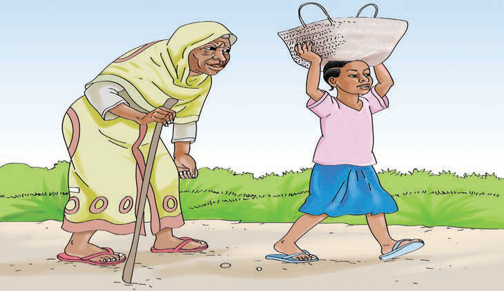
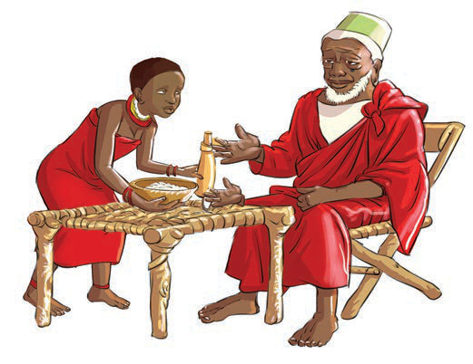

nyumbani na shuleni. Kitendo cha kijana au mtoto kumsaidia mzee na mtu aliyemzidi umri huonesha upendo na heshima kama ilivyo katika Kielelezo namba 1.

Kielelezo namba 1: Mtoto akimsaidia mzigo mzee
Kuwatunza, kuwathamini na kuwalea wazee ni matendo ya kimaadili. Maadili yanasisitiza kutembelea wazee na kuwahudumia kwa kuwapa zawadi na chakula kama inavyoonekana katika Kielelezo namba 2. Pia, tunasisitizwa kuwasaidia kazi mbalimbali.

Kielelezo namba 2: Kijana akimwandalia mzee chakula
nyumbani na shuleni.Kitendo cha kijana au mtoto kumsaidia mzee na mtu aliyemzidi umri huonesha upendo na heshima kama ilivyo katika Kielelezo namba 1.Mtoto anamsaidia bibi kwa kubeba mzigo kichwani wanapotembea njiani.Kielelezo namba 1: Mtoto akimsaidia mzigo mzeeKuwatunza, kuwathamini na kuwalea wazee ni matendo ya kimaadili.Maadili yanasisitiza kutembelea wazee na kuwahudumia kwa kuwapa zawadi na chakula kama inavyoonekana katika Kielelezo namba 2.Pia, tunasisitizwa kuwasaidia kazi mbalimbali.Kijana anamwandalia mzee chakula mezani kwa heshima na upendo.Kielelezo namba 2: Kijana akimwandalia mzee chakula